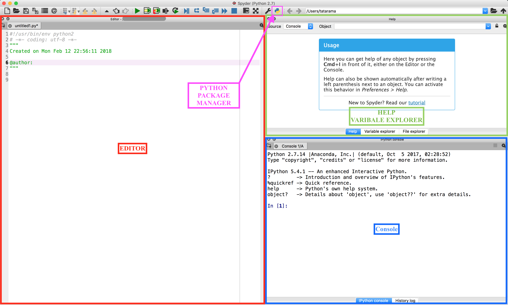

Introduction to Spyder
Spyder can be run by executing the command spyder.
Figure 6 shows the main windows when you first open Spyder. As you may have noticed, the layout is similar to Matlab. Spyder has very good documentation to get you started. It is recommended to go through the steps to get familiarized with the IDE.

Spyder IDE overview
The three essential parts of the screen are outlined.
The console (bottom right, marked in blue). You can work interactively here. Code run, either interactively or from the editor, will output any results here. Error messages will be reported here. There are two types of console: a Python console, and an IPython console. Both will run Python code, but we recommend the IPython console as it offers better visuals for debugging and has additional features.
The editor (left, marked in red). You can write code to be saved to file or run here. This will suggest problems with syntax and has features to help debug and give additional information.
The inspector (top right, marked in green). The Object inspector can display detailed help on specific objects (or functions, or…), and the Variable inspector can display detailed information on the variables that are currently defined. Extremely useful when debugging.
Python Package Manager (top toolbar, marked in pink) Use this menu to add new paths to the default python package paths. (NOTE : The symbol may look slightly different on your machine from the one shown in this report)
For an in depth tutorial of Spyder follow the link.
Getting Help
In any python console you can get information about a particular python object using the help method. For example to get help on the type float,
help(float)
In spyder you can use this method in the console window. The Spyder environment also provides a panel in the top right corner (by default) which is the Object inspector. If you type float into the empty line in the Object inspector window, it will also provide the help string.
Debugging
Refer to the link debug